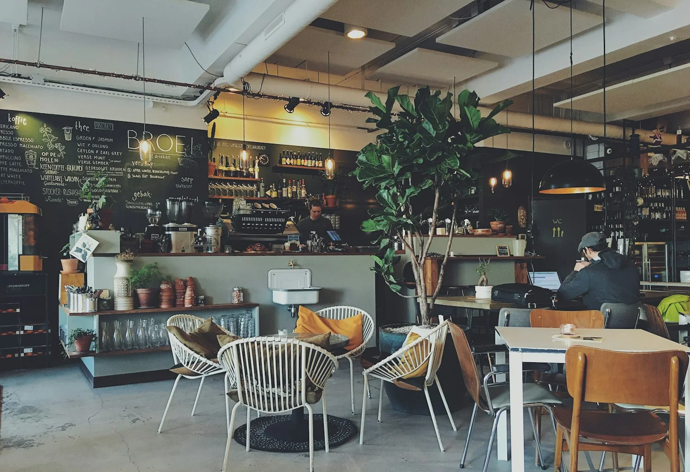

NOÖN Coffee & Lifestyle滋賀・守山Coffee & Lifestyle

A moment for yourself.
ABOUT NOÖN
コーヒーも、器も。
毎日を楽しむために。
NOÖN Coffee & Lifestyleは、コーヒーや食事とともに、テーブルウェアとの出会いも楽しめる場所。飲む時間と、暮らしに持ち帰る楽しみをつなぎます。
朝・昼・夕方をイメージした3種類のオリジナルブレンド。時間や気分に合わせて、一杯を選んで。
お店の日々をInstagramでSTAY A LITTLE WHILE
いつもの景色に、
小さな出会いを。
カフェで過ごす時間も、器を選ぶ時間も。気持ちよい日常のきっかけを探しに。
COME SAY HELLO
滋賀・守山で、
お待ちしています。
NOÖN Coffee & Lifestyle
お車でのアクセスや最新の案内は、お店のInstagramをご確認ください。
- 住所
- 滋賀県守山市荒見町260-1
- 営業時間
- 7:00–20:00
- 営業日のご案内
- 最新の営業日はInstagramへ
- @noon_coffeelifestyle
店舗情報は公開記事の掲載時点をもとにしています。
臨時休業や変更など、最新情報はInstagramでご確認ください。